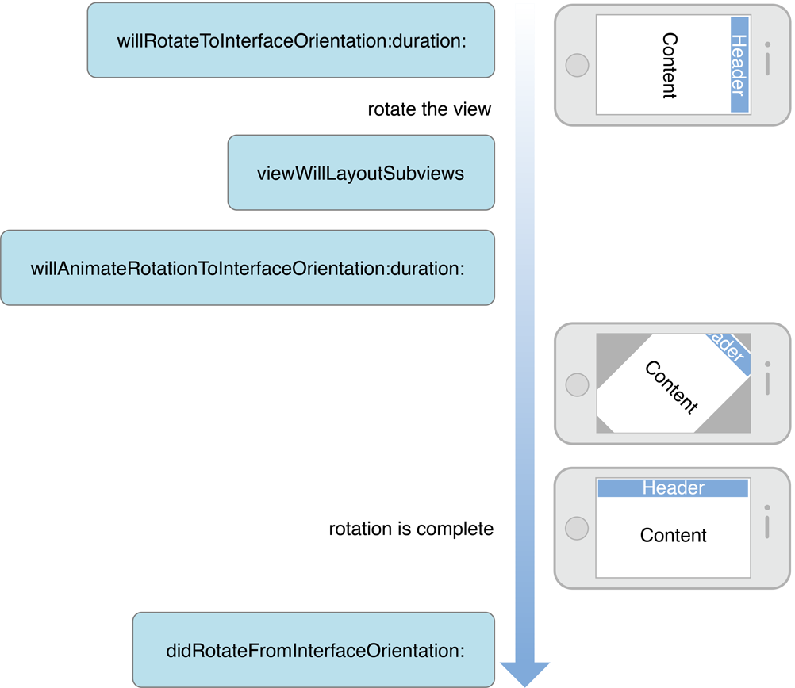

iOS 视图控制器编程指南：支持多种界面方向
记录关于学习过的 iOS 文档
支持多种界面方向
iOS 设备中的加速度传感器可以判断设备当前的方向。默认情况下，应用程序支持横屏和竖屏方向。当 iOS 设备的方向更改时，系统会发送 UIDeviceOrientationDidChangeNotification 通知让有关方面知道发了生更改。默认情况下，UIKit 框架会监听这个通知并使用它自动更新界面方向。这意味着，大部分情况下你不需要处理这个通知，只有少数情况例外。
当用户界面旋转时，窗口会调整尺寸适应新方向。窗口会调整它的根视图控制器的 frame 适应新的尺寸，这个尺寸又会往视图层次结构下方传递给其它视图。因此，使视图控制器支持多个方向的简单方式是配置它的视图层次结构使子视图的位置在它的根视图的 frame 更改时同时更改。大多数情况下，你都需要这个行为因为其它条件可能会导致视图控制器的可见区域更改。更多关于配置视图布局的信息，见 Resizing the View Controller’s Views。
如果默认行为不是你的应用程序想要的，你可以采取以下控制：
- 控制应用程序支持的方向
- 两个方向之间的旋转如何在屏幕上动画。
没有填充屏幕的视图控制器通常不需要关心用户界面的方向，只需要根据父视图控制器所提供的区域填充。根视图控制器 (或全屏幕呈现的视图控制器) 更有可能对设备方向感兴趣。
控制支持哪些界面方向 (iOS 6)
当 UIKit 接收到方向通知时，它会使用 UIApplication 对象和根视图控制器决定新的方向是否允许的。如果两个对象都同意支持新的方向，那么用户界面会旋转成新的方向。否则会忽略设备方向更改。
当视图控制器呈现在根视图控制器上方时，系统行为会更改两种方式。首先，当判断方向是否被支持时被呈现的视图控制器会替代根视图控制器作决定。第二，被呈现的视图控制器也可以提供首选方向 (preferred orientation)。如果视图控制器是全屏幕呈现，那么用户界面会以首选方向呈现。用户预计会看到与设备方向不同的方向并旋转设备。首选方向大部分被用在内容必须被呈现为新方向时。
声明视图控制器支持的界面方向
作为主窗口的根视图控制器的视图控制器或在主窗口呈现全屏幕的视图控制器可以声明支持哪些方向。通过重写 supportedInterfaceOrientations 方法。默认情况下，设备上的视图控制器使用 iPad 的约定支持全部四个方向。而使用 iPhone 约定的设备，除了上下倒转的方向其它都支持。
你应该总是在设计时选择你的视图所支持的方向并且考虑如何实现这些方向的代码。基于运行时的信息动态选择支持方向并没有什么好处。即便你的应用程序这样做了，你仍然需要实现必须的代码支持所有可能的方向，因此你最好选定支持的方向或者不做前面的事情。
清单 8-1 展示一个相当典型的 supportedInterfaceOrientations 方法的实现使视图控制器支持竖屏方向和左横屏方向。你的这个方法的实现应该像这个例子一样。
清单 8-1 实现 supportedInterfaceOrientations 方法
1 |
|
动态控制是否旋转
有时你可能想动态禁用方向自动旋转。例如，当你需要短时间固定旋转方向时可以这样做。如果你想手动控制状态栏的位置你必须暂时禁用方向更改 (例如当你调用 setStatusBarOrientation:animated: 方法)。
如果你想临时禁用自动旋转，需要避免操作方向的 masks。应该重写最顶层的视图控制器的 shouldAutorotate 方法。这个方法会在执行任意自动旋转之前被调用。如果返回 NO，那么会旋转会被抑制。
声明首选呈现方向
当视图控制器呈现为全屏幕显示它的内容时，有时内容在特定的方向出现时效果最好。如果内容可以只被显示在特定的方向，那么你只需要简单的把需要的方向在 supportedInterfaceOrientations 方法中返回。如果视图控制器支持多个方向但最好的效果在不同方向，你可以重写 preferredInterfaceOrientationForPresentation 方法提供首选方向。清单 8-2 展示的例子被视图控制器使用将它的内容呈现为横屏方向。首选界面方向必须是视图控制器所支持的方向之一。
清单 8-2 实现 preferredInterfaceOrientationForPresentation 方法
1 |
|
更多呈现的信息，见 Presenting View Controllers from Other View Controllers。
声明应用程序支持的界面方向
设置应用程序支持的界面方向最简单的方式是编辑项目的 Info.plist 文件。例如在视图控制器中，使你所定义的四个界面方向合法。更多信息，见 Information Property List Key Reference。
如果你需要限制应用程序支持的方向，那么这些限制会全局应用影响到应用程序中所有视图控制器，即使你的应用程序使用系统视图控制器。在所有给定的时间，最顶层的视图控制器的 mask 会跟应用程序的 mask 进行逻辑 AND 运算判断哪些方向是支持的。计算的结果必须永远不为 0，如果是，系统会抛出 UIApplicationInvalidInterfaceOrientationException 异常。
因为应用程序的 mask 是应用到全局的，请谨慎使用。
重要提示： 应用程序和视图控制器方向 mask 的组合结果必须至少有一个可用的方向。如果没有可用的方向会抛出异常。
理解旋转处理 (iOS 5 与之前)
在 iOS 5 与之前，视图控制器有时可以参与到旋转处理中即使它不是最顶端的全屏幕视图控制器。这种情况通常发生在容器视图控制器询问它的子级支持哪些界面方向时。在实际操作时，子级覆盖父级的能力很少用到。考虑到这一点，你应该尽可能在必须支持 iOS 5 的应用程序中模拟 iOS 6 的行为：
- 在根视图控制器或全屏幕显示的视图控制器中，选取对你的用户界面有意义的一部分界面方向。
- 在子级控制器中，通过设计适应性强的视图布局支持所有默认分辨率。
声明支持的界面方向
要声明你支持的界面方向，通过重写 shouldAutorotateToInterfaceOrientation: 方法并说明你的视图支持哪些方向。你应该在设计时就选定视图所支持的方向并考虑这些方向的实现代码。你想基于运行时的信息动态选择支持方向并没有好处。即使你这样做了，你仍然需要实现必要的代码支持所有可能的方向，因此你最好选定的方向或者不做前面的事情。
清单 8-3 展示一个相当典型的 shouldAutorotateToInterfaceOrientation: 方法的实现对视图控制器实现默认的竖屏方向支持和左横屏方向的支持。你自己的这个方法的实现应该像这个例子一样。
清单 8-3 实现 shouldAutorotateToInterfaceOrientation: 方法
1 |
|
重要说明：你必须至少为一个界面方向返回 YES。
如果你的应用程序两个横屏方向都支持，你可以使用 UIInterfaceOrientationIsLandscape 宏作为快捷方式，而不是针对两个横屏常量比较 orientation 参数。UIKit 框架同样定义了 UIInterfaceOrientationIsPortrait 宏标识两个的竖屏方向。
在可见的视图控制器中响应方向更改
当发生旋转时，视图控制器是处理的组成部份。可见的视图控制器会在旋转的不同阶段被通知给它们机会执行额外的任务。你可以使用这些方法隐藏或显示视图，重新定位或调整视图尺寸，或者通知应用程序的其它部分关于方向更改。因为你的自定义方法在旋转的期间被调用，你应该避免在这些方法执行费时的操作。你应该避免将整个视图层次结构替换成新的视图集合。这里是为不同方向提供特殊视图的最好位置，例如呈现一个新的视图控制器 (在 Creating an Alternate Landscape Interface 中描述)。
旋转方法会发送到根视图控制器中。根视图控制器在必要时传递这些事件到它的子级，并一直往视图控制器层次结构下方传递。这里是当旋转被触发时事件发生的顺序：
1.窗口调用根视图控制器的 willRotateToInterfaceOrientation:duration: 方法。
容器视图控制器会转发这个消息到当前显示的内容视图控制器。你可以重写这个方法在你的自定义内容视图控制器中隐藏视图或界面被旋转之前对视图布局做其它更改。
2.窗口调整视图控制器的视图的边界。这会导致视图布局它的子视图，触发视图控制器的 viewWillLayoutSubviews 方法。当这个方法运行时，你可以查询应用程序对象的 statusBarOrientation 属性判断当前用户界面布局。
见 How View Controllers Participate in the View Layout Process。
3.视图控制器的 willAnimateRotationToInterfaceOrientation:duration: 方法被调用。这个方法是从一个动画效果块内被调用使得你所做的全部属性更改同时进行动画作为构成旋转的其它动画效果。
4.动画效果被执行。
5.窗口调用视图控制器的 didRotateFromInterfaceOrientation: 方法。
容器视图控制器会转发这个消息到当前显示的内容视图控制器。这个动作标记着旋转处理的结束。你可以使用这个方法显示视图，更改视图的布局，或做其它应用程序的更改。
图 8-1 展示上面步骤的可视化，它的展示了如何界面在旋转处理时不同阶段的外观。
图 8－1 界面旋转的处理

当你的视图控制器是隐藏时旋转可能会发生
如果发生旋转时你的视图控制器的内容不在屏幕上，那么它们不会见到旋转消息的列表。例如下面事件的顺序：
1.你的视图控制器呈现另一个全屏幕内容的视图控制器。
2.用户旋转设备使用户界面方向更改。
3.应用程序退出被呈现的视图控制器。
在这个例子中，呈现者视图控制器在发生旋转后是看不见的，因此它不会接收到任何旋转事件。作为解决，当它重新出现时，它的视图需要以普图视图布局处理简单的调整尺寸和重新定位。如果你的布局代码需要知道设备的当前方向，它可以读取应用程序对象的 statusBarOrientation 属性判断当前方向。
创建备选的横向界面
如果你想把同样的数据呈现为不同方式基于设备是否竖屏或横屏方向，可以使用两个分离的视图控制器达成目的。其中一个视图控制器应该管理基本方向 (通常是竖屏) 的数据显示，另一个管理备用方向的数据显示。相比每次方向更改时变更视图的层次结构，使用两个视图控制器更简单和更有效。它让每个视图控制器关注在一个方向中所呈现的数据的显示并管理相应的事情。它也消除了使视图控制器代码杂乱的方向检测。
要支持备选横向界面，你必须做以下事情：
- 实现两个视图控制器对象。一个只呈现竖屏界面，另一个只呈现横屏界面。
- 注册 UIDeviceOrientationDidChangeNotification 通知。在你的处理方法中，基于当前设备方向呈现或退出备选视图控制器。
因为视图控制器通常在内部管理方向变化，你需要告诉每个视图控制器只在一个方向中显示它自己。主视图控制器的实现则需要检测设备方向的更改并且当相应的方向更改发生时呈现备用视图控制器。当方向返回主方向时主视图控制器会让备用视图控制器退出。
清单 8-4 展示你需要在支持竖屏方向的主视图控制器中实现的关键方法。当主视图控制器从故事板加载后，它会从共享的 UIDevice 对象注册接收方向更改的通知。当这样的通知到达时。orientationChanged: 方法则根据当前方向呈现或退出横屏视图控制器。
清单 8-4 呈现横屏视图控制器
1 | @implementation PortraitViewController - (void)awakeFromNib { isShowingLandscapeView = NO; [[UIDevice currentDevice] beginGeneratingDeviceOrientationNotifications]; [[NSNotificationCenter defaultCenter] addObserver:self selector:@selector(orientationChanged:) name:UIDeviceOrientationDidChangeNotification object:nil]; } - (void)orientationChanged:(NSNotification *)notification { UIDeviceOrientation deviceOrientation = [UIDevice currentDevice].orientation; if (UIDeviceOrientationIsLandscape(deviceOrientation) && !isShowingLandscapeView) { [self performSegueWithIdentifier:@"DisplayAlternateView" sender:self]; isShowingLandscapeView = YES; } else if (UIDeviceOrientationIsPortrait(deviceOrientation) && isShowingLandscapeView) { [self dismissViewControllerAnimated:YES completion:nil]; isShowingLandscapeView = NO; } } |
实现旋转代码的小提示
根据你的视图的复杂度，你可能需要写大量的代码支持旋转－或者完全不写。当搞清楚你需要做什么时，你可以使用下面的提示作为书写代码时的指南。
- 在旋转的期间临时禁止事件发出。对视图禁用事件发出防止不必要的代码在处理旋转更改时执行。
- 存储可见地图区域。如果你的应用程序包含地图视图，在开始旋转之前保存可见地图区域值。当旋转完成后，根据需要使用已保存的值确保显示区域与之前大概相同。
- 对于复杂的视图层次结构，替换视图为快照图像。如果动画大量的视图会导致性能问题，可以临时将这些视图替换为包含这些视图图像的图像视图。旋转完成之后，重新安装视图并移除图像视图。
- 旋转之后重新加载全部可见表格的内容。当旋转完成后强制进行重新加载操作确保所有新暴露的表格行会被适当的填充。
- 使用旋转通知更新你的应用程序的状态信息。如果你的应用程序使用当前方向判断如何呈现内容，使用视图控制器的旋转方法 (或相应的设备方向通知) 记录这些更改并做必要的调整。
iOS 翻译 《View Controller Programming Guide for iOS：Introduction》
iOS 翻译 《View Controller Programming Guide for iOS：View Controller Basics》
iOS 翻译 《View Controller Programming Guide for iOS：Using View Controllers in Your App》
iOS 翻译 《View Controller Programming Guide for iOS：Creating Custom Content View Controllers》
iOS 翻译 《View Controller Programming Guide for iOS：Resource Management in View Controllers》
iOS 翻译 《View Controller Programming Guide for iOS：Responding to Display-Related Notifications》
iOS 翻译 《View Controller Programming Guide for iOS：Resizing the View Controller’s Views》
iOS 翻译 《View Controller Programming Guide for iOS：Using View Controllers in the Responder Chain》
iOS 翻译 《View Controller Programming Guide for iOS：Supporting Multiple Interface Orientations》
iOS 翻译 《View Controller Programming Guide for iOS：Coordinating Efforts Between View Controllers》
iOS 翻译 《View Controller Programming Guide for iOS：Enabling Edit Mode in a View Controller》
iOS 翻译 《View Controller Programming Guide for iOS：Creating Custom Segues》
iOS 翻译 《View Controller Programming Guide for iOS：Creating Custom Container View Controllers》